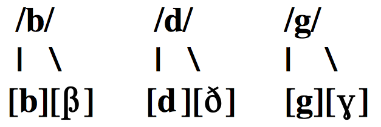
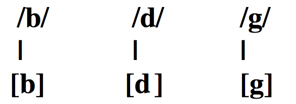
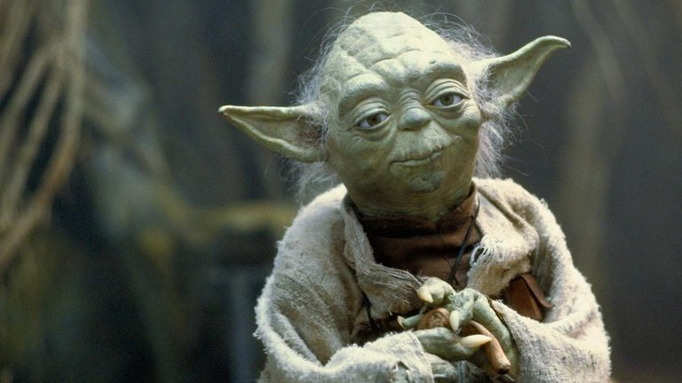
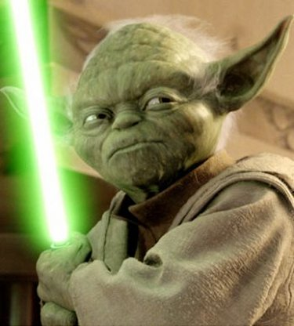
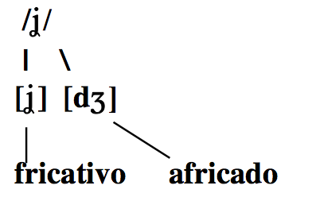
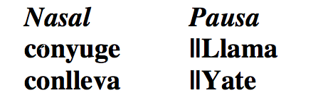
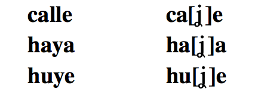

Fonética y español oral
Las obstruyentes sonoras /b, d, g/ y /ʝ/
Joseph V. Casillas
Instituto Franklin: otoño 2015
Repaso
En grupos...


- Definid fonema y aportad un ejemplo.
- Definid alófono y aportad un ejemplo.
- ¿Cómo sabemos si dos sonidos son fonemas o alófonos? ¿Qué prueba podemos usar?
- ¿Cuáles son las diferencias entre las oclusivas sordas del inglés con respecto a las del español?
Práctica
A transcribir
- No me digas ahora eso porque no lo entiendo
- Los dos hermanos salieron a pasear al parque
- Cuando Inés vino a cenar, le regalé dos flores
- La pared azul antes era blanca
- No te pongas esos pantalones porque están húmedos
- Justino, Antonio y Juan no son mis novios
- No voy al concierto contigo
- Los triptongos me asustan mucho de vez en cuando
- No contestes el teléfono si es para mí
- Al final sí encontré lo que me dijiste
- La cámara de gas no fue un buen invento de la humanidad
A transcribir
- Nomedigasahoraesoporquenoloentiendo
- Losdoshermanossalieronapasearalparque
- CuandoInésvinoacenar leregalédosflores
- Laparedazulanteserablanca
- Notepongasesospantalonesporqueestánhúmedos
- Justino, AntonioyJuannosonmisnovios
- Novoyalconciertocontigo
- Lostriptongosmeasustanmuchodevezencuando
- Nocontesteselteléfonosiesparamí
- Alfinalsíencontréloquemedijiste
- Lacámaradegasnofueunbueninventodelahumanidad
Transcripción fonémica
- /no.me.ˈdi.ga.sa.ˈo.ɾa.e.so.poɾ.ke.no.lo.en.ˈti̯en.do/
- /los.do.seɾ.ˈma.no.sa.li̯e.ˈɾo.na.pa.se.ˈa.ɾal.ˈpaɾ.ke/
- /ku̯an.doi̯.ˈnes.ˈbi.no.a.θe.ˈnaɾ.le.re.ga.ˈle.dos.ˈflo.ɾes/
- /la.pa.ˈɾe.da.ˈθu.lan.te.ˈse.ɾa.ˈblan.ka/
Transcribid las siguientes oraciones
- Juan y Ernesto fueron de viaje.
- Marta hizo la tarea.
Juntamos todo...
- JuanyErnestofuerondeviaje.
- Martahizolatarea.
Cuidado con las deslizadas
- /ˈxu̯a.ni̯er.ˈnes.to.ˈfu̯e.ron.de.ˈbi̯a.xe/
...y los antidiptongos
- /ˈmaɾ.ta.ˈi.θo.la.ta.ˈɾe.a/
Los triptongos
- Triptongo: Cualquier combinación monosilábica que empieza con una deslizada, tiene por núcleo una vocal media o baja y termina con otra deslizada.
deslizada → vocal → deslizada
Los triptongos
Se dan entre palabras...
| Secuencia | Transcripción fonológica | |
|---|---|---|
| ciencia humana: | ||
| anuncio irresponsable: | ||
| fue imposible: | ||
| antiguo irlandés: |
Los triptongos
Se dan entre palabras...
| Secuencia | Transcripción fonológica | |
|---|---|---|
| ciencia humana: | /ˈθi̯en.θi̯au̯.ˈma.na/ | |
| anuncio irresponsable: | /a.ˈnun.θi̯oi̯.res.pon.ˈsa.ble/ | |
| fue imposible: | /ˈfu̯ei̯m.po.ˈsi.ble/ | |
| antiguo irlandés: | /an.ˈti.gu̯oi̯ɾ.lan.ˈdes/ |
Los triptongos
...y también en la forma vosotros.
- cambiáis: /kam.ˈbi̯ai̯s/
- continuáis: /kon.ti.ˈnu̯ai̯s/
Las obstruyentes sonoras
Los fonemas oclusivos sonoros: /b, d, g/
- /b/: bilabial, oclusivo, sonoro
- /d/: dental, oclusivo, sonoro
- /g/: velar, oclusivo, sonoro
Los fonemas oclusivos sonoros: /b, d, g/
Son fonemas, hay pares mínimos
| Principio de palabra | Interior de palabra | |||
|---|---|---|---|---|
| bala/mala | /ˈba.la/ /ˈma.la/ | beba/besa | /ˈbe.ba/ /ˈbe.sa/ | |
| dato/gato | /ˈda.to/ /ˈga.to/ | seda/seca | /ˈse.da/ /ˈse.ka/ | |
| gato/pato | /ˈga.to/ /ˈpa.to/ | mega/mesa | /ˈme.ga/ /ˈme.sa/ |
Los fonemas oclusivos sonoros: /b, d, g/
Cada fonema tiene dos alófonos...

Los fonemas oclusivos sonoros: /b, d, g/
En inglés las oclusivas sonoras sólo tienen un alófono (oclusivo)

Los fonemas oclusivos sonoros: /b, d, g/
La pronunciación
- El inglés no tiene [β] ni [ɣ]
- [ð] es un fonema en inglés, pero es un alófono de /d/ en español
- [ð] es interdental en inglés, pero dental en español
¿Cómo se articulan?
Los fonemas oclusivos sonoros: /b, d, g/
- El español no tiene como fonema el sonido labiodental [v]
- Los grafemas 'b' y 'v' siempre son bilabiales
| Lengua | Palabra | Transcripción fonética |
|---|---|---|
| inglés | 'visit' | [ˈvi.zit] |
| español | 'visita' | [bi.ˈsi.ta] |
Los fonemas oclusivos sonoros: /b, d, g/
El fonema /b/:
- [b]: modo oclusivo
- [ˈam.bos]
- [ˈbe.to]
- [β]: modo fricativo
- [ˈu.βo]
- [ˈal.βa]
¿En qué contextos se encuentran?
- [b] → después de una nasal o una pausa
- [β] → en el resto de los contextos e incluso entre palabras
Distribución complementaria
Distribución complementaria
- Es una situación lingüística en la cual un sonido "A" aparece en determinados contextos y "B" aparece en el resto de los contextos en los cuales "A" no aparece.
Las oclusivas sonoras /b/, /d/ y /g/
El fonema /d/:
- [d]: modo oclusivo
- [ˈan.do]
- [al.ˈde.a]
- [ð]: modo fricativo
- [ˈla.ðo]
El fonema /g/:
- [g]: modo oclusivo
- [ˈtaŋ.go]
- [ɣ]: modo fricativo
- [ˈma.ɣo]


Distribución complementaria
| - | [b, d, g] | → | Después de una nasal o una pausa; después de [l] en el caso de [d]. |
Distribución complementaria
| - | [b, d, g] | → | Después de una nasal o una pausa; después de [l] en el caso de [d]. |
| - | [β, ð, ɣ] | → | En el resto de los contextos e incluso entre palabras |
Distribución complementaria
*Esta regla se aplica incluso entre palabras, dentro de un mismo grupo fónico, como en:
| En Guadiana | [eŋ.gu̯a.ˈði̯a.na] |
| A Guadiana | [a.ɣu̯a.ði̯a.na] |
Distribución complementaria
*Esta regla se aplica incluso entre palabras, dentro de un mismo grupo fónico, como en:
| El dueño | [el.ˈdu̯e.ɲo] |
| A Damián | [a.ða.ˈmi̯an] |
La fricativización
/b, d, g/ → [β, ð, ɣ]
- Este proceso ocurre cuando los sonidos oclusivos sonoros (en español /b, d, g/) se pronuncian con fricción. Este proceso convierte los oclusivos en fricativos [β, ð, ɣ]
- Supone un cambio de modo
- El sonido afectado aparece en posición inicial de sílaba
- El único proceso en el cual el sonido que aparece anteriormente dicta el cambio del sonido
Transcribid
- No me digas ahora eso porque no lo entiendo
- Los dos hermanos salieron a pasear al parque
- Cuando Inés vino a cenar, le regalé dos flores
- La pared azul antes era blanca
Transcripción fonémica
- /no.me.ˈdi.ga.sa.ˈo.ɾa.e.so.poɾ.ke.no.lo.en.ˈti̯en.do/
- /los.do.seɾ.ˈma.no.sa.li̯e.ˈɾo.na.pa.se.ˈa.ɾal.ˈpaɾ.ke/
- /ku̯an.doi̯.ˈnes.ˈbi.no.a.θe.ˈnaɾ.le.re.ga.ˈle.dos.ˈflo.ɾes/
- /la.pa.ˈɾe.da.ˈθu.lan.te.ˈse.ɾa.ˈblan.ka/
Transcripción fonética
- /no.me.ˈdi.ga.sa.ˈo.ɾa.e.so.poɾ.ke.no.lo.en.ˈti̯en.do/
[no.me.ˈði.ɣa.sa.ˈo.ɾa.e.so.poɾ.ke.no.lo.en̪.ˈti̯en̪.do] - /los.do.seɾ.ˈma.no.sa.li̯e.ˈɾo.na.pa.se.ˈa.ɾal.ˈpaɾ.ke/
[loz.ðo.seɾ.ˈma.no.sa.li̯e.ˈɾo.na.pa.se.ˈa.ɾal.ˈpaɾ.ke] - /ku̯an.doi̯.ˈnes.ˈbi.no.a.θe.ˈnaɾ.le.re.ga.ˈle.dos.ˈflo.ɾes/
[ku̯an̪.doi̯.ˈnez.ˈβi.no.a.θe.ˈnaɾ.le.re.ɣa.ˈle.ðos.ˈflo.ɾes] - /la.pa.ˈɾe.da.ˈθu.lan.te.ˈse.ɾa.ˈblan.ka/
[la.pa.ˈɾe.ða.ˈθu.lan̪.te.ˈse.ɾa.ˈβlaŋ.ka]
Práctica
Fito y fitipaldis "Soldadito marinero"
Fito y fitipaldis "Soldadito marinero"
Él camina despacito que las prisas no son buenas,
en su brazo dobladita con cuidado la chaqueta.
Luego pasa por la calle donde los chavales juegan,
él también quiso ser niño pero le pilló la guerra.
Soldadito marinero conociste a una sirena
de esas que dicen te quiero si ven la cartera llena.
Escogiste a la mas guapa y a la menos buena,
sin saber como ha venido te ha cogido la tormenta
Fito y fitipaldis "Soldadito marinero"
Él camina ðespacito que las prisas no son βuenas,
en su βrazo ðoβlaðita con cuiðaðo la chaqueta.
Lueɣo pasa por la calle ðonde los chaβales jueɣan,
él también quiso ser niño pero le pilló la ɣuerra.
Soldaðito marinero conociste a una sirena
de esas que ðicen te quiero si βen la cartera llena.
Escoxiste a la mas ɣuapa y a la menos βuena,
sin saβer como ha βeniðo te ha coxiðo la tormenta
Fito y fitipaldis "Soldadito marinero"
Él quería cruzar los mares y olvidar a su sirena,
la verdad no fue dificil cuando conoció a Mariela,
que tenia los ojos verdes y el negocio entre las piernas.
¡Hay que ver que puntería no te arrimas a una buena!
Soldadito marinero conociste a una sirena
de esas que dicen te quiero si ven la cartera llena
Escogiste a las mas guapa y a la menos buena,
sin saber como ha venido te ha cogido la tormenta.
Después de un invierno malo, una mala primavera,
dime porqué estas buscando una lágrima en la arena.
Fito y fitipaldis "Soldadito marinero"
Él quería cruzar los mares y olβiðar a su sirena,
la βerðað no fue ðificil cuando conoció a Mariela,
que tenia los ojos βerðes y el neɣocio entre las piernas.
¡Hay que βer que puntería no te arrimas a una βuena!
Soldaðito marinero conociste a una sirena
de esas que ðicen te quiero si βen la cartera llena
Escoxiste a las mas ɣuapa y a la menos βuena,
sin saβer como ha βeniðo te ha coxiðo la tormenta.
Después ðe un inbierno malo, una mala primaβera,
dime por qué estas βuscando una láɣrima en la arena.
Transcribid
- Juan fue inmediatamente a la tienda a comprar pan.
Transcrición fonémica
- /ˈxu̯an.ˈfu̯ei̯n.me.di̯a.ta.men.te.a.la.ˈti̯en.daː.kom.pɾaɾ.pan/
Describid
| Modo | Punto | Sonoridad | |
|---|---|---|---|
| [b] | ________ | ________ | ________ |
| [g] | ________ | ________ | ________ |
| [ɣ] | ________ | ________ | ________ |
| [d] | ________ | ________ | ________ |
| [ð] | ________ | ________ | ________ |
| [f] | ________ | ________ | ________ |
| [x] | ________ | ________ | ________ |
| [β] | ________ | ________ | ________ |
Describid
| Modo | Punto | Sonoridad | |
|---|---|---|---|
| [b] | oclusivo | bilabial | sonoro |
| [g] | oclusivo | velar | sonoro |
| [ɣ] | fricativo | velar | sonoro |
| [d] | oclusivo | dental | sonoro |
| [ð] | fricativo | dental | sonoro |
| [f] | fricativo | labiodental | sordo |
| [x] | fricativo | velar | sordo |
| [β] | fricativo | bilabial | sonoro |

La yod(a) [ˈdʒo.ða]
La yod

- /ʝ/: fricativa, palatal, sonora
La yod
Es un fonema, hay pares mínimos
| Principio de palabra | Interior de palabra | |||
|---|---|---|---|---|
| lloro/loro | /ˈʝo.ro/ /ˈlo.ɾo/ | bella/besa | /ˈbe.ʝa/ /ˈbe.sa/ |
La yod
Tiene dos alófonos

La yod
Distribución de alófonos
- Africado después de nasal o pausa
- Fricativo en el resto de los contextos

La yod
Distribución de alófonos
- Africado después de nasal o pausa
- Fricativo en el resto de los contextos

- Las mismas reglas se aplican entre palabras
- el yunque: [el.ˈʝuŋ.ke]
- un yunque: [un.ˈdʒuŋ.ke]
La yod
Ortografía
| Fonema | Grafemas | Ejemplos |
|---|---|---|
| /ʝ/ | 'll' | 'llanto' |
| 'y' | 'yo' | |
| 'hi-' | 'hierba' |
La yod
Pronunciación
- [ʝ]
- Más fuerte que 'y' en inglés en
- 'yellow'
- [dʒ]
- Parecido a la pronunciación de 'j' y 'dg' en inglés en
- 'jungle'
- 'judge'
La yod
La yod
Práctica
Práctica
- Voy a ir a la tienda hindú del barrio italiano a comprar unos zapatos.
- A Juana la eligieron reina del concurso de belleza internacional.
- Juan Andrés es dueño de una huerta grande en la ciudad de Medellín.
Práctica
- Voyairalatiendahindúdelbarrioitalianoacomprarunoszapatos.
- AJuanalaeligieronreinadelconcursodebellezainternacional.
- JuanAndrésesdueñodeunahuertagrandeenlaciudaddeMedellín.
Práctica
- /boi̯.a.ˈi.ɾa.la.ˈti̯eN.dai̯N.ˈdu.del.ˈba.ri̯oi̯.ta.ˈli̯a.no.a.koN.ˈpɾa.ɾu.nos.θa.ˈpa.tos/
- /a.ˈxu̯a.na.la.e.li.ˈxi̯e.ɾoN.ˈrei̯.na.del.koN.ˈkúɾ.so.de.be.ˈʝe.θai̯N.teɾ.na.θi̯o.ˈnal/
- /ˈxu̯a.naN.ˈdɾe.ˈses.ˈdu̯e.ɲo.deu̯.na.ˈwéɾ.ta.graN.deːN.la.θi̯u.ˈda.de.me.de.ˈʝiN/
Práctica
- /boi̯.a.ˈi.ɾa.la.ˈti̯eN.dai̯N.ˈdu.del.ˈba.ri̯oi̯.ta.ˈli̯a.no.a.koN.ˈpɾa.ɾu.nos.θa.ˈpa.tos/
[boi̯.a.ˈi.ɾa.la.ˈti̯en̪.dai̯n̪.ˈdu.ðel.ˈβa.ri̯oi̯.ta.ˈli̯a.no.a.kom.ˈpɾa.ɾu.nos.θa.ˈpa.tos] - /a.ˈxu̯a.na.la.e.li.ˈxi̯e.ɾoN.ˈrei̯.na.del.koN.ˈkúɾ.so.de.be.ˈʝe.θai̯N.teɾ.na.θi̯o.ˈnal/
[a.ˈxu̯a.na.la.e.li.ˈxi̯e.ɾon.ˈrei̯.na.ðel.koŋ.ˈkuɾ.so.ðe.βe.ˈʝe.θai̯n̪.ter.na.θi̯o.ˈnal] - /ˈxu̯a.naN.ˈdɾe.ˈses.ˈdu̯e.ɲo.deu̯.na.ˈwéɾ.ta.graN.deːN.la.θi̯u.ˈda.de.me.de.ˈʝiN/
[ˈxu̯a.nan̪.ˈdre.ˈsez.ˈðu̯e.ɲo.ðeu̯.na.ˈweɾ.ta.ɣɾan̪.deːn.la.θi̯u.ˈða.ðe.me.ðe.ˈjin]